Установка WEB-серверу - OpenServer
Для того, щоб завантажити необхідне програмне забезпечення для налаштування локального серверу, заходимо на відповідний сайт і клікаємо на силку.
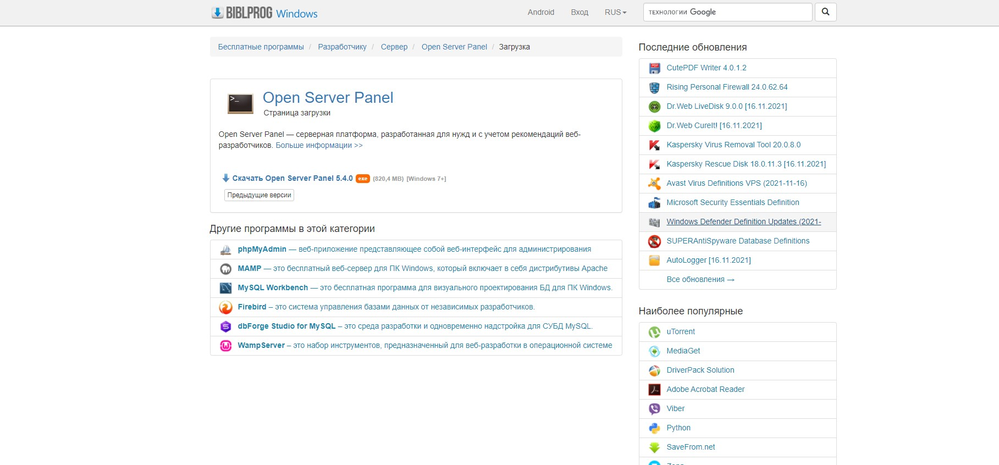Чекаємо, коли файл установки завантажиться. Потім запускаємо його.
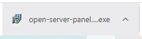Обов'язково читаємо ліцензійну згоду. Якщо ми згодні, то приймаємо її і натискаємо "далі".
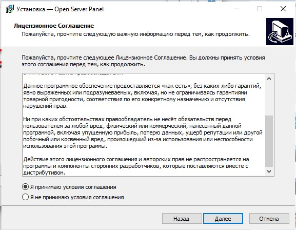Обираємо папку для встановлення серверу. Рекомендується встановлювати сервер в короневу папку диску С з міркувань оптимізації.
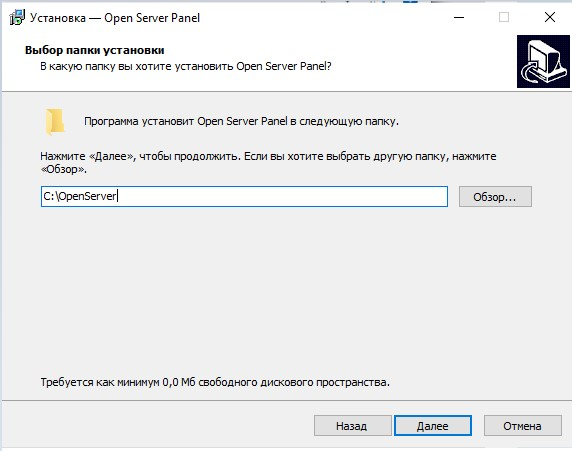Далі найважливіший крок. Необхідно обрати, які засоби для роботи з веб-серверами необхідно встановити. Нашою бригадаю було прийняте рішення встановити останні версії Apache, PHP та MySQL.
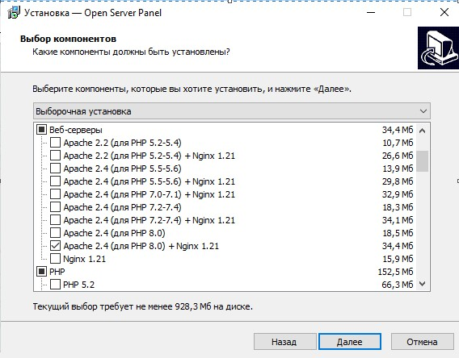 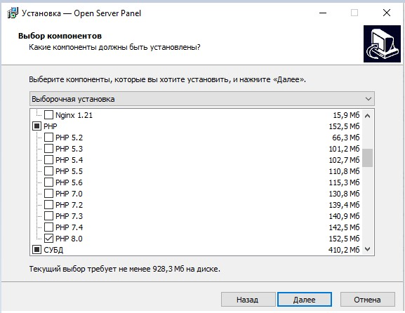 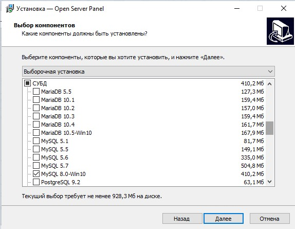Обираємо додаткові задачі, що можуть виконатися після встановлення основного пакету програмного забезпечення з попедерднього пункту. Для всіх користувачів рекомендується обрати перші два та останній пункти. Оскільки в даному прикладі OpenServer встановлений на SSD-накопичувачі, обрано також і третій пункт.
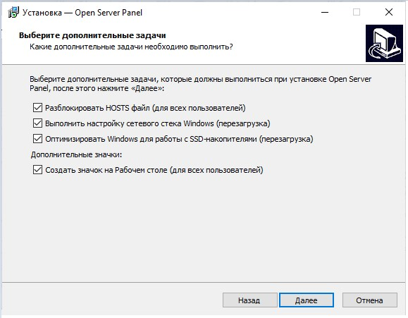Перевіряємо параметри установки, натискаємо "Встановити"
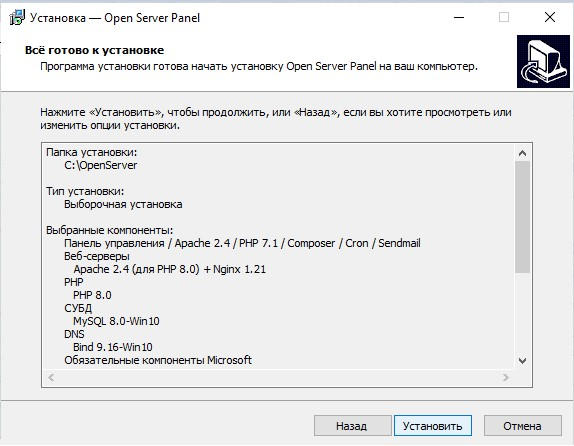Перезапускаємо комп'ютер, щоб прийняти зміни в системі у зв'язку з встановленням серверу.
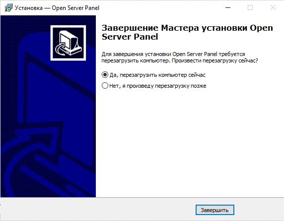Коли OpenServer встановлено, перевіряємо його роботу. Запускаємо сервер у панелі задач Windows.
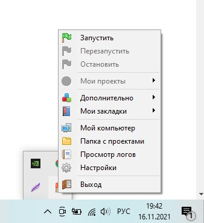Після установки на комп'ютері вже є проект за замовчуванням, що слугує для первірки роботи серверу. Відкриваємо його.
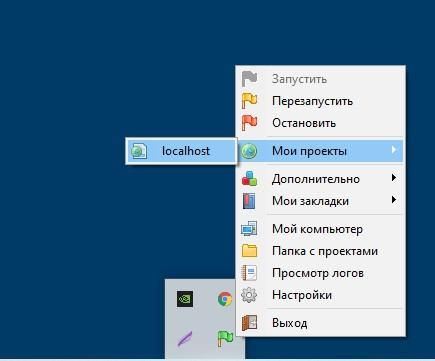Як можна впевнитися із повідомлення на сайті, локальний сервер працює коректно.
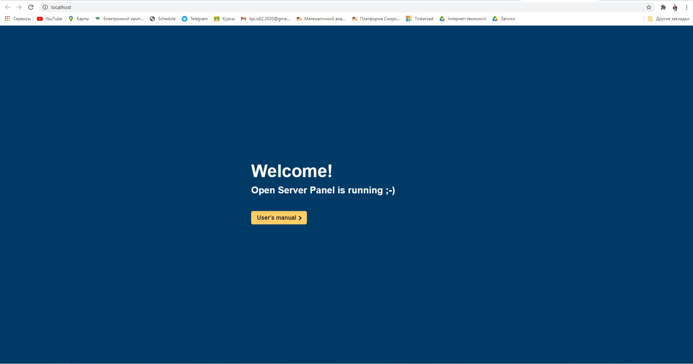Наостанок, для зручності у налаштуваннях програми слід встановити браузер, який буде використовуватися сервером. В даному випадку це Google Chrome.
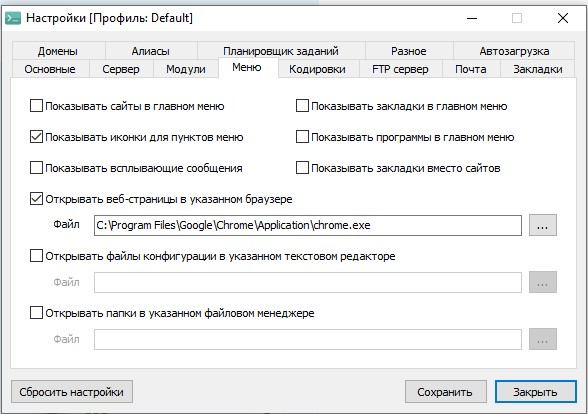